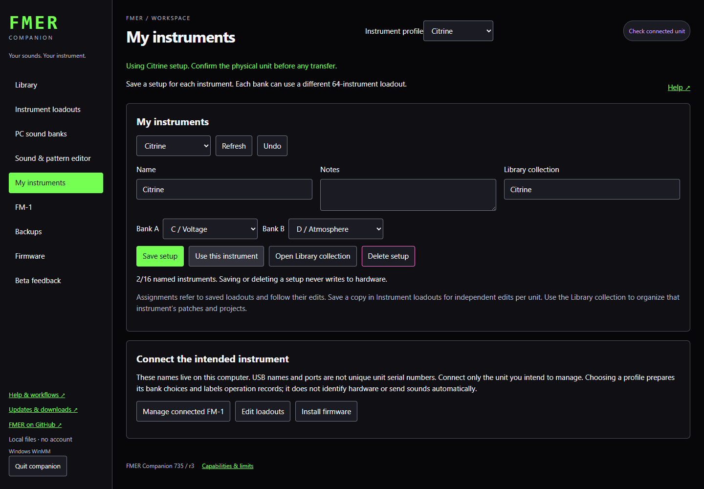
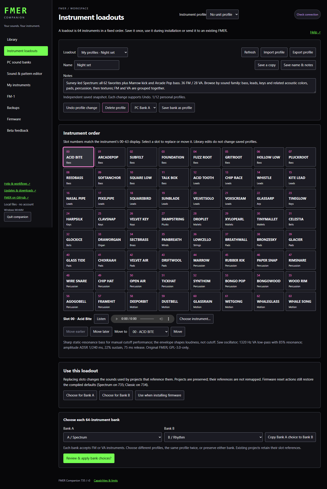

Companion
My instruments
Name each FM-1 and keep independent bank assignments and Library collections.
Open My instruments, choose New instrument, enter a name and choose a64-instrument loadout for Bank A and Bank B. Save the setup. Up to16 named instruments are available. Choose Keep bank unchanged to preserve a bank during deployment.
Use this instrument selects its setup in the header and prepares its choices for installation or the loadout deployment screen. Those actions still require explicit review; choosing a profile never writes to hardware. Device operation records carry the selected profile name.
Assignments refer to loadouts and follow their edits. To customize only one instrument, save a separate copy in Instrument loadouts, then assign it here. Open Library collection filters the shared Library for that instrument. Move or duplicate patches and projects into that collection using the normal Library controls.
Identify the physical instrument
A local name is not a hardware identity. USB names and port locations cannot reliably identify a particular FM-1 after cables are moved. Connect only the intended unit for flashing and transfers. Companion refuses ambiguous multiple-device connections; no automatic routing by saved name occurs. Select the correct profile and confirm the physical unit.
Deleting a setup removes only local metadata. Loadouts, Library items, backups and hardware remain unchanged. Undo restores the last profile edit. A deleted loadout must be reassigned before using a setup that referenced it. Unit profiles are stored under the Companion data folder in units; retain that folder with loadouts and catalog when moving the complete Companion workspace.
Bank naming and compatibility
Bank A is the former DEFAULT bank; Bank B is the former USER bank. Both accept FM or VA patches and can be edited and saved. The initial state uses Spectrum in both; assign different64-instrument packs as desired. Bank A remains fully populated; Bank B also supports empty slots. Separate reset actions restore the compiled Spectrum originals. Existing native files and API fields retain default/user names and slot mapping: device0?63 is Bank B,64?127 Bank A; PC bank order is Bank A then Bank B. Renaming the banks does not remap any saved project.

